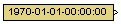

| MBDS Environment |
|
Date Time Source |
MATLAB Helpdesk |
General
Outputs a constant date and time signal.
Library
DescriptionMBDS Blockset

This block outputs a constant date and time signal based on a uint32 data type. It represents the number of seconds since the 1970-01-01. Specify the date and time via the parameter Constant value of the block mask. Comply to the format: YYYY-MM-DD-hh:mm:ss, for example 2000-12-24-20:01:23. The resulting date and time signal is limited to the range of 1970-01-01-00:00:00 to 2105-12-31-23:59:59. If the specified date and time value exceeds this interval, the output signal is automatically limited to the valid range.
Inputs and Outputs
Example
Port I/O Data Type Description DT
Out
uint32 Constant date and time signal
Refer to the example.